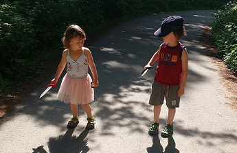

Moja kochana rodzinka
Jestem rodowitą Lublinianką i w Lublinie mieszkam na stałe. Zacznijmy od tego, że sama pochodzę z dużej rodziny. Mam starszego brata i dwie młodsze siostry. Brat i starsza z sióstr mieszkają w Warszawie. Najmłodsza siostra mieszka niedaleko mnie razem z naszymi rodzicami. W moim domu jest bardzo wesoło. Mam cudownego partnera Rafała i dwójkę dzieci: Arturka (6 lat) i Aurelkę (4 lata). W lipcu urodzi się ich mały braciszek.
